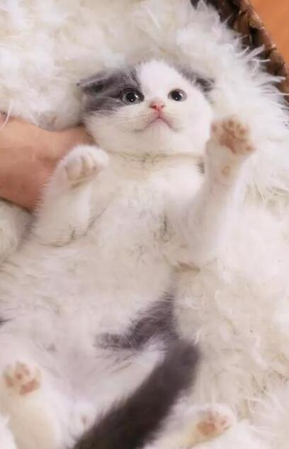

|  |
很多人都说折耳猫的基因是存在缺陷的，所以很多折耳猫的身体都不是很好，真的是这样吗？在养护折耳猫的过程中，你知道折耳猫不能吃什么东西吗？
折耳猫不能吃什么？
首先我们要知道折耳猫也是猫咪的一种，所有普通猫咪不能吃的东西折耳猫也不能吃。因为折耳猫有着一些遗传的基因缺陷，所以它不能补钙和吃盐。
一、折耳猫不要补钙
所有拥有折耳猫基因的猫咪都会存在着某个程度的骨骼和关节的病变，而且折耳越严重的猫咪，遗传病就更严重。为什么呢？因为折耳猫的耳朵之所以向前弯折是因为显性基因的突变导致的，而且折耳猫的骨骼遗传病刚好是显性基因导致的。
所以全部的折耳猫都存在着软骨的发育异常，不同的程度表现在尾部和脚踝和膝盖等部位。
补钙不仅对折耳猫没有任何的帮助，还会造成软骨的钙化，还会加重疾病。
主人不要盲目的给折耳猫补钙就好，很多人认为给折耳猫补钙是有好处的，这完全是错误的想法。
二、折耳猫少吃盐
虽然普通的猫咪也很少吃盐，但不等于猫咪就不能吃。不过猫咪盐吃多了也会存在弊端，所以主人在平时的时候一定要注意盐的供给量，吃盐太多会导致猫咪的心脏负荷。
我们总是能听到折耳猫突然暴毙的消息，通常是在加重无缘无故的就死亡了，找不出原因。其实这跟折耳猫日常的养护有很大的关系，很多折耳猫都很安静，有的是部分的先天性心脏病患者，所以不能大量的运动。真的是这样吗？其实所有折耳猫的心脏都需要好好的保护，所以平时不要吃盐比较高的食品。 |
|